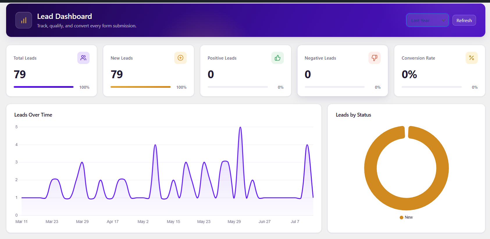

Free WordPress plugin · Forminator & Contact Form 7
Every form entry is a lead. Treat it like one.
Your form plugin collects the submission. This one gives your sales team the dashboard: statuses, feedback, activity history, filters, and CSV export, without leaving WordPress.
Interested in the Pro plan. Asked about CSV export and follow-up reminders.
1,284Total leads
37New
18%Converted

Why it exists
A travel agency was losing leads. Fixed without a CRM.
Enquiries arrived through their Forminator forms every day, then scattered across entries, inboxes, and spreadsheets. Two reps would ring the same person the same afternoon. And when a caller mentioned the Goa package they had asked about yesterday, nobody had anything to look at.
HubSpot and Zoho cost more than a small team could justify for the problem in front of them. So instead of adding another subscription, the dashboard went where the leads already were, inside WordPress, on the site they were already paying for.
Faster first responseNo duplicate follow-upsConversion tracked end to endOne shared view for the teamNo recurring software cost
Built by Anup Kankale, a WordPress and PHP developer in Mumbai.
Submissions pile up. Nobody knows what happened to them.
These are the six things the audit turned up at the travel agency. None of them were the form plugin's fault: a form plugin captures a submission, it was never meant to run a follow-up.
What the audit found
Leads in six places
Leads scattered across form entries, inboxes, and spreadsheets
No record of who had been contacted, or what came of it
Two reps ringing the same person the same afternoon
No context when a caller referred back to an earlier enquiry
No view of lead volume, response time, or conversion
A CRM subscription costing more than the problem itself
What replaced it
A pipeline your team works
Every submission in one list, from Forminator and Contact Form 7
Six statuses, changed in a click and stamped into the activity log
Assignment and status visible before anyone picks up the phone
Every note and past field on one panel, ready to reference
Charts for volume over time and conversion rate
Free, and running on the site you already pay for
What you get
Everything the follow-up actually needs
It is a normal WordPress admin page, so there is nothing new to learn and nothing extra to log into.
One dashboard for every lead
The whole picture on one WordPress admin page: stat cards for total, new, positive and negative leads, a leads-over-time chart, a status breakdown, and your top forms, all without leaving your site.
All leads, filtered
Page through every lead and narrow by form, status, date range, assignee, or source. Search runs across the submitted data, and a badge on each row tells you which form plugin it came from.
Lead detail panel
Open any lead to see every field it arrived with, switch its status in one click, and read the whole feedback thread alongside the activity log.
CSV export
Export leads filtered by form and status. Every field becomes its own column, and the source and form name come along too.
Sales Admin users
Give the role to any existing WordPress user from Settings. They land on the dashboard and see nothing else in wp-admin.
Email verification
Optionally send a six-digit code before a Forminator entry counts as a lead. Codes expire in ten minutes and are rate limited.
New lead emails
Turn on a notification when a lead arrives and choose which address receives it. Off by default.
Auto-assignment
Route incoming leads to a specific team member automatically, so nothing sits unclaimed.
The pipeline
Six statuses, and everyone reads them the same way
Each change is stamped into the lead's activity log, so you can always see who moved what, and when.
NewJust came in, nobody has looked at it yet.
PositiveLooks like a real opportunity worth chasing.
Follow upNeeds another contact before you can call it.
NegativeNot a fit, or not interested right now.
ConvertedThey became a customer.
ClosedFinished, no further action needed.
Access
Give sales the leads, not the whole site
Administrator
Full control
Everything, as usual, plus the lead dashboard and its settings.
Dashboard, all leads, and settings
Add or remove Sales Admin users
Configure notifications and auto-assignment
Export any filtered set to CSV
Sales Admin
Leads only
Logs in and lands straight on the Lead Dashboard. The rest of WordPress stays out of the way.
View every lead and open its details
Update statuses as work progresses
Leave rated feedback for the team
No posts, plugins, users, or theme access
Setup
Installed in about two minutes
Install it straight from the WordPress plugin directory. Your existing Forminator entries appear immediately; Contact Form 7 leads start saving from activation onward.
1
Have a form plugin
Install Forminator or Contact Form 7. Either one on its own is enough, and both are free.
2
Search the directory
In wp-admin open Plugins → Add New and search for DevXpert Lead Dashboard.
3
Install and activate
Tables are created automatically on activation. There is nothing to configure first.
4
Submit a test entry
Open the new Lead Dashboard menu and your entry shows up there as a new lead.
Version 1.1.0WordPress 5.0+, tested to 7.0.2PHP 7.4+Forminator or Contact Form 7
Free on the WordPress plugin directory
Put your leads somewhere they get worked.
Install it from the WordPress plugin directory, activate it, and your existing Forminator submissions show up in the dashboard right away.